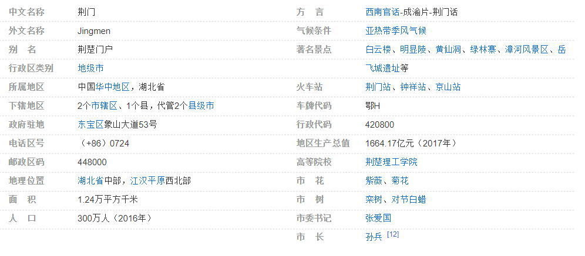

荆门
荆门，湖北省地级市，长江中游城市群重要成员，鄂中区域性中心城市 ，素有“荆楚门户”之称 ，位于湖北省中部，汉江中下游，北接襄阳市和随州市，西靠宜昌市，东临孝感市，南分别与荆州市、潜江市、天门市接壤，介于东经111°51′-113°29′，北纬30°32′-31°36′之间。
荆门在夏商时属荆州之域，西周分属权国、鄀国，春秋战国属楚，汉置当阳县，唐立荆门县，宋建荆门军，元设荆门府，明复荆门县，清为荆门直隶州，民国降州为县，新中国成立后续为荆门县。1979年，分设荆门县、荆门市。1983年，荆门县与荆门市合并升为地级荆门市。
荆门市版图总面积1.24万平方千米，截至2016年末，下辖2个市辖区、1个县，代管2个县级市，全市总人口300万人。2017年，荆门市实现地区生产总值1664.17亿元，比2016年增长7.5%。
荆门东、西、北三面高，中、南部低，呈向南敞开形，兼有低山坳谷区、丘岗冲沟区和平原湖区；属北亚热带季风气候，四季分明，雨热同期，过境河流主要有汉江、漳河和富水河。
荆门是湖北省历史文化名城，也是中国优秀旅游城市 ，境内有世界文化遗产——明显陵，以及楚汉古墓群、屈家岭文化遗址等文化古迹，诞生了朱厚熜、老莱子、宋玉、莫愁女等一批历史名人，留下了“阳春白雪”、“下里巴人”等历史典故。
